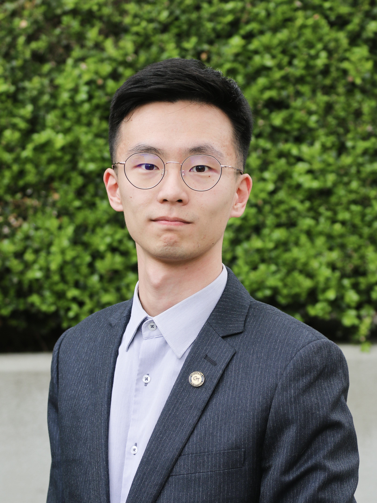
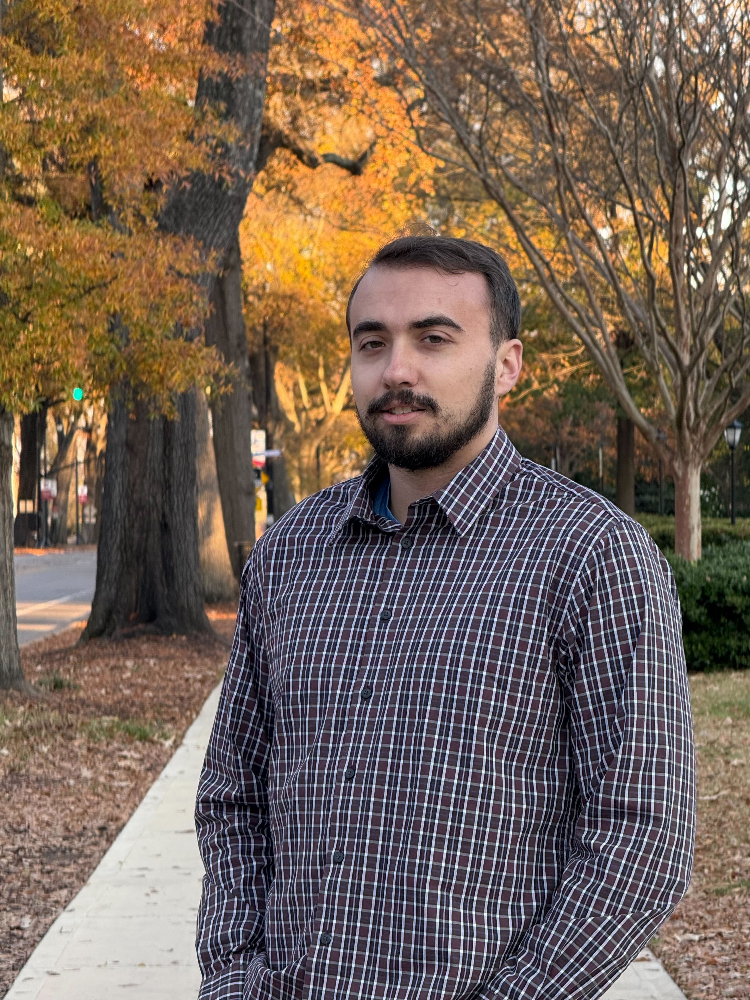

People¶
Principal Investigator¶
Dr. Graeme J. Kennedy¶
{kind=link}
Dr. Graeme J. Kennedy is an associate professor in the Guggenheim School of Aerospace Engineering at the Georgia Institute of Technology where he leads his research team. His research involves the development and application of numerical optimization techniques to structural and multidisciplinary design problems, with a primary focus on the analysis and design of fixed-wing aircraft. Before joining the faculty, Dr. Kennedy was a postdoctoral research fellow at the University of Michigan in the Department of Aerospace Engineering. Dr. Kennedy received his PhD from the University of Toronto Institute for Aerospace Studies (UTIAS) in 2012.
- External links:
Current Students¶
Yicong (Aaron) Fu, 2020 - present¶
{kind=link}
Yicong Fu is a n-year Ph.D. candidate. Prior to joining the group, he obtained his MS degree from Aerospace Systems Design Laboratory, Georgia Tech in 2020, and his BS degree from Beihang University (BUAA), China in 2018. His research interests include topology optimization, finite element analysis, high performance computing and GPU computing.
Bao Li, 2020 - present¶
{kind=link}
Bao Li is a Ph.D. candidate in the Aerospace Engineering at the Georgia Institute of Technology. He holds an MS degree in Aerospace Engineering from the University of Michigan. His work focuses on the eigen problem in the topology optimization, especially the eigenvector aggregation and corresponding sensitivity analysis. He is also interested in the high-performance computing and efficient implementation of the topology optimization algorithms and PDE solvers.
- External links:
Brian J. Burke, 2021 - present¶

Brian J. Burke is a Ph.D. candidate in Aerospace Engineering at the Georgia Institute of Technology. He is a member of the development team for FUNtoFEM, the group’s interface for coupled aerothermoelastic analysis, design, and optimization. Brian is also leading a new project to perform aerostructural analyses and optimizations of truss-braced wings using several levels of fidelity. Before coming to Georgia Tech, Brian earned his Bachelors of Science with Honors in Aeronautical and Aeronautical Engineering from Purdue University in 2021. While at Purdue, he conducted research in Prof. Jonathan Poggie’s hypersonics group, with a focus on scramjet unstart.
Sean Engelstad, 2021 - present¶
{kind=link}
Sean Engelstad is a Ph.D. student in Aerospace Engineering at the Georgia Institute of Technology, where he received his B.S. in AE as well. Sean has interned at the Aerospace Corporation the past two summers, working on design curves for unvented sandwich structures, a methodology for the treatment of pressure transients in space systems, and machine learning for valve failures in fluid systems. As a part of the SMDO group, Sean is working on adding mesh sensivitity to the SMDO team’s structural optimization software, using Engineering Sketch Pad, ESP/CAPs. He is a member of the development team for FUNtoFEM, the group’s interface for coupled aerothermoelastic analysis, design, and optimization. With mesh sensivities available, optimized solutions can be parameterized as a function of global or local mesh parameters easily.
- External links:
Cameron Smith, 2022 - present¶
{kind=link}
Cameron Smith is a Ph.D. student in Aerospace Engineering at the Georgia Institute of Technology. Currently, he is working on developing an electric motor model to be used for trajectory and topology optimization, specifically for applications in electric vertical take-off and landing vehicles. Prior to joining Georgia Tech, Cameron received his B.S. in Aerospace Engineering at Rensselaer Polytechnic Institute (RPI). During his time at RPI, Cameron’s research focus was in multi-fidelity structural modeing for unmanned aerial vehicles.
Lonnie Webb, 2023 - present¶
{kind=link}
Lonnie Webb is currently an M.S. student in Aerospace Engineering at the Georgia Institute of Technology, where he also earned his B.S. in AE. During an internship at NASA Marshall Space Flight Center, he gained hands-on experience in fatigue and structural analysis of additively manufactured components. His academic and professional interests revolve around structural optimization, structural analysis, and additive manufacturing for aerospace applications.
Previous Students¶
Ph.D. Alumni¶
James Gloyd, Ph.D., 2019 - 2023, thesis: Mechanical Metamaterial Lattices via Direct Methods
Mark Leader, Ph.D., 2016 - 2021, thesis: Stress-Based Topology Optimization for Steady-State and Transient Thermoelastic Design
Komahan Boopathy, Ph.D., 2015 - 2020, thesis: Adjoint Based Design Optimization of Systems with Time Dependent Physics and Probabilistically Modeled Uncertainties
Adam T. Sidor (Co-supervised with Prof. Robert Braun), Ph.D., 2019, thesis: Design and Manufacturing of Conformal Ablative Heatshields
Kevin Jacobson (Co-supervised with Prof. Marilyn Smith), Ph.D., 2019, thesis: Adjoint-Based Aeroelastic Optimization with High-Fidelity Time-Accurate Analysis
Ting Wei Chin, Ph.D., 2019, thesis: Multi-Physics High Resolution Topology Optimization for Aerospace Structures
M.S. Alumni¶
Rohan Patel, 2022
Sejal Sahu, 2022
Lenard Halim, 2021
Liam Smith, 2020
Zongxu Dong, 2020
Jan F. Kiviaho, 2018
Adrien Hervet, 2017
Chunrong Ngoh, 2017
Maegan Lee, 2016
Sui An, 2015